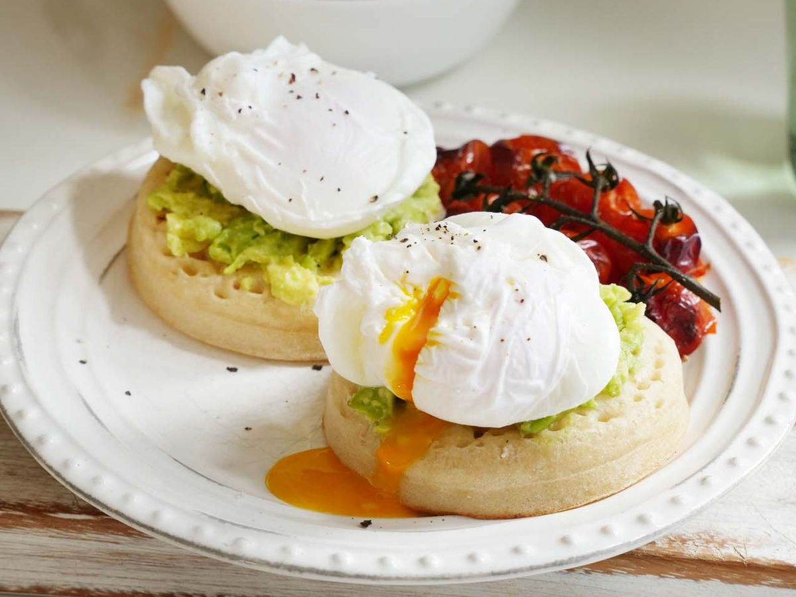

Poached eggs are delicately cooked to achieve firm whites and a runny yolk. I promise
this healthy, fat-free method of cooking eggs is quick and easy after getting the hang of
the technique. A poached egg is perfect to eat by itself, or in addition to toast, egg
benedicts, salad, and other dishes to spice up your breakfast. Yum!

Ingredients/equipment
1 large egg(best if fresh)
1 tbs vinegar
fine mesh strainer
large pot
Instructions
Bring a large pot of water to a boil before turning the heat back to low.
Crack an egg into a mesh strainer to strain out the liquidy part of the white, and place the rest of the egg in a bowl.
Add 1 tablespoon of vinegar into the water and stir to create a vortex
Quickly and gently slide the egg into the vortex. Cook for 3-4 minutes before taking the egg out with a ladle